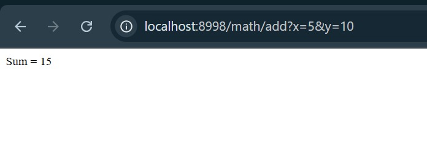
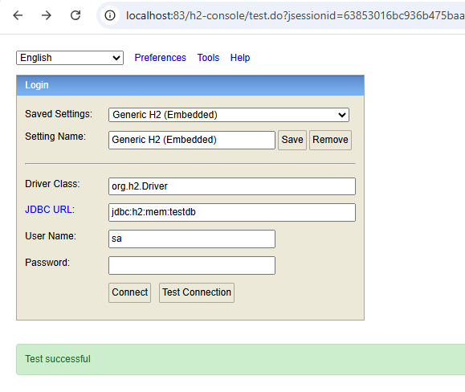
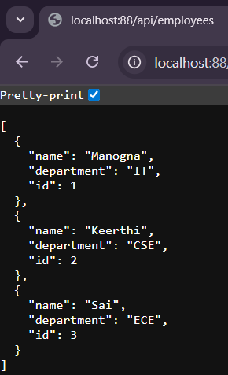
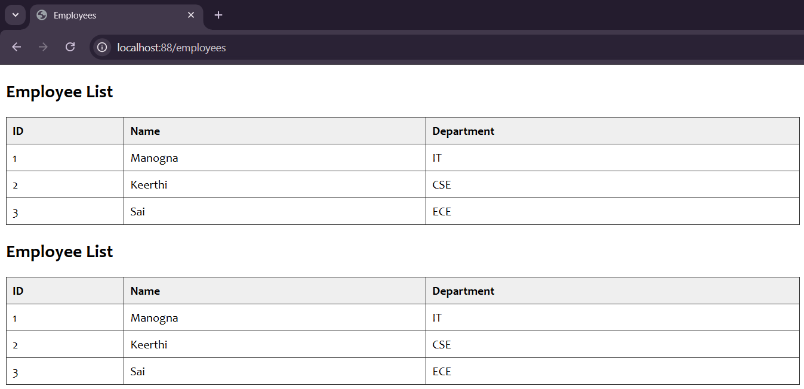
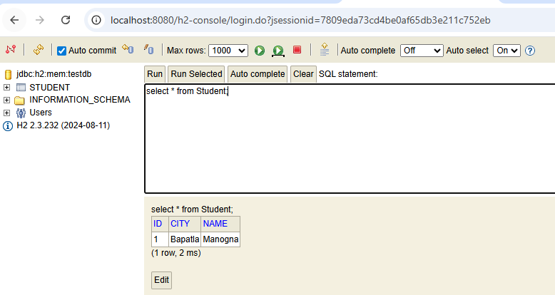
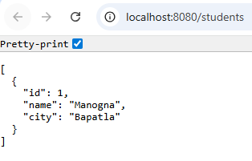

WEEK-2
AIM:JAVA &MSACCESS CONNECTIONS WITH OUT DSN.
Procedure:
DATE:28-07-25
Click the category as java and in projects java application and click on next.
Enter file name and click finish now your file is setup is completed.
In your project libraries add the JAR/Folder and choose all drivers that are required and add them.
In files open local disk open vrsec excel sheet to add more records in the database.
Adding the records in database it and save the data.After adding the data then close the tab and execute the code.
Run the code then the execution is successful and the output is displayed which are added in the database.
